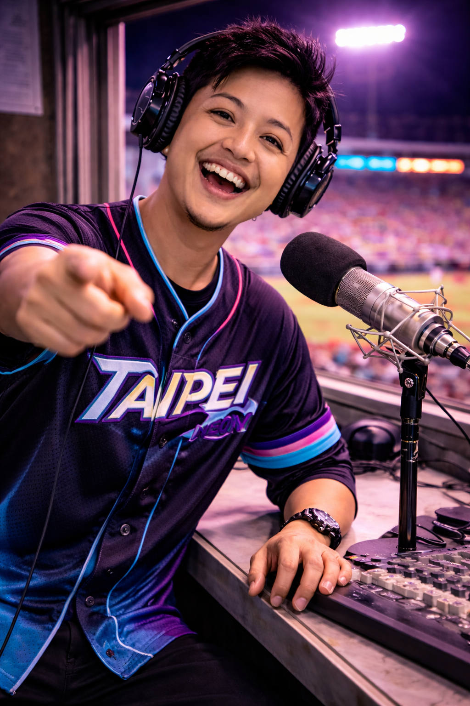

Taipei Neon
Pacific DivisionThe Club
Taipei plays under light—real light, reflected light, and whatever bleeds in from the city beyond the gates. Games feel fast even when they’re not. There’s no mythmaking here. Just innings stacked late into the night, when sound carries farther and the crowd stays longer than planned.
Ballpark

Neon Grounds. A compact park tucked into the city’s edge. Sign glow reflects off concrete, and the outfield wall hums softly after dark. The game never fully separates from the street.
Broadcast & Announcers

Jun-Hao Chen
Play-by-play. Sharp pacing, quick resets. Chen lets silence do some of the work—then snaps the call right on contact.

Mei “Spark” Huang
In-stadium announcer. Bright voice, easy rhythm. Lineups land clean. Crowd cues hit on time. Nothing forced.
Mascot & Stands

Glow
A human-worn suit with reflective trim and worn sneakers. Glow moves constantly—aisles, rails, concourse edges— never quite where you expect.

The Night Crowd
Phones out. Radios on. Food still warm. Applause comes in waves that rise and vanish just as fast.